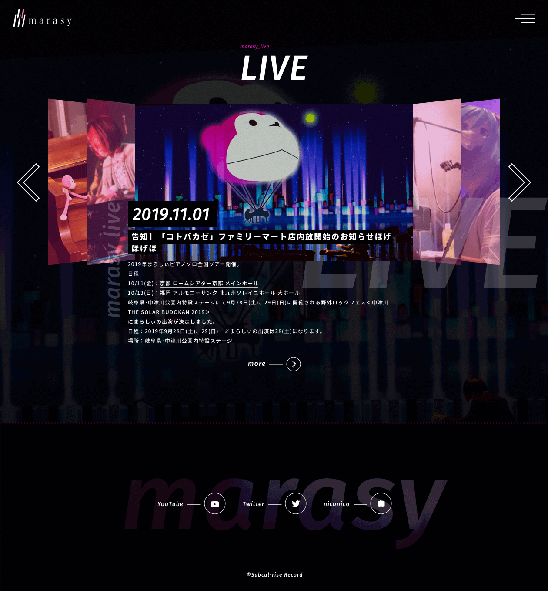

marasy’s official site
ピアニストとして活躍するまらしぃさんの公式サイトです。
情報が最低限分かりやすければ良い、との事でしたが個人的にはまらしぃさんの自由な表現力・奏法も表したかった為サイト全体に五線譜を引き、その上に乗るコンテンツを 様々な音とし、自由なレイアウトや少しの遊び心・個性を入れる事で表現しました。
こちらのサイトは社内で初めてアワードで賞をとりました。
https://marasy8.jp/ BACK
ピアニストとして活躍するまらしぃさんの公式サイトです。
情報が最低限分かりやすければ良い、との事でしたが個人的にはまらしぃさんの自由な表現力・奏法も表したかった為サイト全体に五線譜を引き、その上に乗るコンテンツを 様々な音とし、自由なレイアウトや少しの遊び心・個性を入れる事で表現しました。
こちらのサイトは社内で初めてアワードで賞をとりました。
https://marasy8.jp/